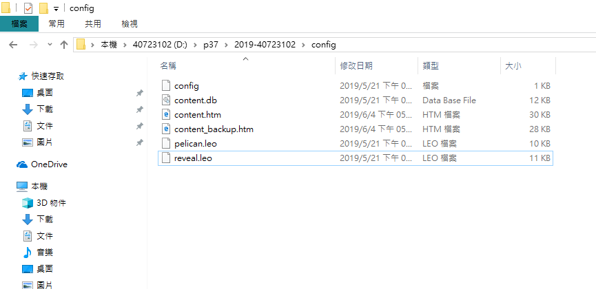
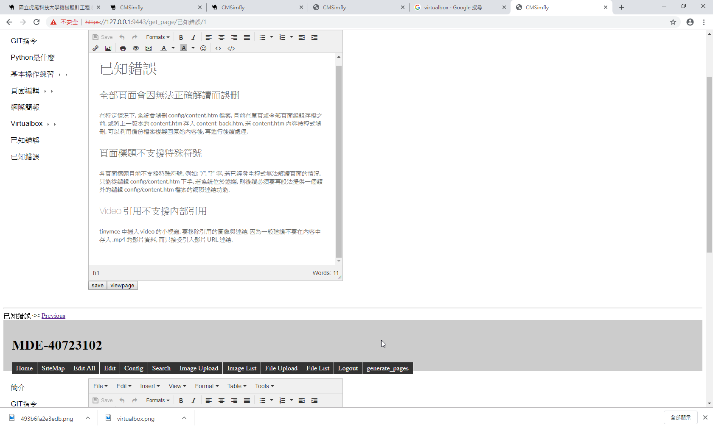

新建批次檔步驟 <<
Previous 已知錯誤
期中問題
在特定情況下, 系統會誤刪 config/content.htm 檔案, 目前在單頁或全部頁面編輯存檔之前, 或將上一版本的 content.htm 存入 content_back.htm, 若 content.htm 內容被程式誤刪, 可以利用備份檔案複製回原始內容後, 再進行後續處理.
各頁面標題目前不支援特殊符號, 例如: "/", "?" 等, 若已經發生程式無法解讀頁面的情況, 只能從編輯 config/content.htm 下手, 若系統位於遠端, 則後續必須要再設法提供一個額外的編輯 config/content.htm 檔案的網際連結功能.
tinymce 中插入 video 的小視窗, 要移除引用的圖像與連結, 因為一般建議不要在內容中存入 .mp4 的影片資料, 而只接受引入影片 URL 連結.
單機之資料庫只供本機使用，網路之資料庫為透過區域網路設定可供多人共用。
因為協同後，需要pull request才能真正取得倉儲之近端，在指令馬中打git pull，即可將近端
遠端統合， 便可把資料push上去。
- 兩個人同時用近端並同時上傳檔案，但有合併衝突怎麼辦
先將.htm檔拖曳到SciTE文字編輯器，找出衝突點，並刪除頭(<<<<<<<)尾(>>>>>>>)與接 合處 (=======)後，儲存並重新進入近端，將之轉成Generapage，最後git add . git commit 並git push。
有可能是因為檔案中又包住另一個git clone 下來的資料，造成程式碼衝突，因而，使得變成404網頁。
* 處理方式:建議不要將檔案連續包夾在同一個資料夾裡面。
由於前後自行更改大小不一，因而造成網頁爆掉，需要到SciTE去刪除設定大小的前後(head3)
即可救回網頁。 P.S.建議不要隨便更改字型大小。
檢視問題點在哪行程式碼，將之移除，並重新檢視、送出，以下為指令:
Git log(查看從最近到最遠得提交日誌)
Git checkout 7碼(丟棄工作區文檔的修改)
Git status(查看當前git倉儲狀態)
Git diff (查看修改的文檔內容)
Git status(查看當前git倉儲狀態)
Git stash(將寫到一半的代碼從工作區拿走存起來)
Git status(查看當前git倉儲狀態)
期末問題
將舊版倉儲一律改版成新版，在原先舊版資料檔中保存config目錄，之後將新版倉儲資料複製撇除git檔全部覆蓋後，重新進入近端推送變更資料後即可解決衝突問題。
補:假如沒有去做更新改版的動作，可能會導致資料推送不完整或是push不上去的問題。
去Source code更改，刪除空白頁 ，網頁卻出現錯誤
解決方法:

1.前往隨身碟中該倉儲的config資料夾中
2.分別有content.htm跟content_backup.htm
3.刪除content.htm
4.再把content_backup.htm改成content.htm
或者拉到文字編輯器中找尋錯誤的地方，更改後儲存(建議先留一個備份)
5.回去9443重整網頁即可
如下:

原因是有兩個重複的H1，改掉其中一個相同名稱的H1即可。